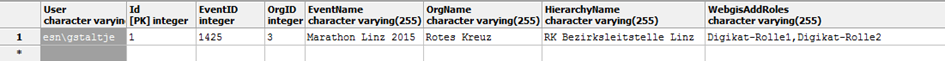

Rollenparameter¶
Rollenparameter im webGIS sind bestimmte Key/Value-Paare, die einem webGIS-Anwender zugeordnet sind. Der Begriff und die Idee kommen eigentlich aus dem PVP-Umfeld, wo einer Rolle auch noch weitere Parameter übergeben werden können. So kann zum Beispiel eine Rolle Gemeinde noch genauer durch einen Parameter GemeindeNummer spezifiziert werden. Die Rolle berechtigt einen authentifizierten Anwender für eine bestimmte Anwendung (Karte). Der Rollenparameter bestimmt die eigentliche Gemeinde und kann für unterschiedliche Anwendungsfälle verwendet werden.
Rollenparameter verwenden¶
Wird PVP als Authentifizierungsmethode verwendet, werden die Rollenparameter von dort automatisch ausgelesen. Zusätzlich können jedem User auch Rollenparameter aus einer Datenbank übergeben werden. Dazu sind in der webgis.config folgende beiden Tags notwendig:
<add key="portal_extended_role_parameters_source" value="postgres:Server=127.0.0.1;Database=webgis;User Id=postgres;Password=…"/>
<add key="portal_extended_role_parameters_statement" value="select EventID,OrgID,EventName,OrgName from digikat_user_rights where User=@username"/>
Der Parameter portal_extended_role_parameters_source gibt den Datenbank-ConnectionString an. Die Daten können hierbei aus SQL Server, Postgres oder Oracle kommen. Der Parameter portal_extended_role_parameters_statement gibt das SQL-Statement an, mit dem die Rollenparameter für einen entsprechenden User abgeholt werden können. Als SQL-Parameter können hier folgende Werte angegeben werden:
@username: Der Name, mit dem sich der Benutzer beim Viewer authentifiziert hat.@pvp_gvgid: Der Wert aus der Header-VariablenX-AUTHENTICATE-gvGid.
Eine Sonderstellung haben hier Spalten, die mit Webgis beginnen:
WebgisAddRoles: Werte aus dieser Spalte werden nicht als Rollenparameter, sondern als Rolle übernommen. Es können hier mehrere Rollen, mit Beistrich getrennt, angeführt werden.
Eine weitere Möglichkeit zur Erweiterung der Rollenparameter stellen HTTP-Header-Variablen dar. Diese werden beim Aufruf des Viewers gewöhnlich von einer Portalsoftware (z.B. PVP) übergeben. Um auf diese Variablen zugreifen zu können, ist folgender Eintrag in der webgis.config notwendig:
<add key="portal_extended_role_parameters_header" value="X-AUTHENTICATE-cn,X-AUTHENTICATE-email" />
Hier werden mit Beistrich getrennt die Header-Variablen angeführt, die später als Rollenparameter zur Verfügung stehen sollen. Auf diese Werte kann dann auch, wie unten gezeigt, über die Syntax [role-parameter:Parametername] zugegriffen werden, z.B. [role-parameter:X-AUTHENTICATE-cn].
Warnung
Gibt man unter dem Feld WebgisAddRoles mehrere Gruppen an, müssen diese mit Beistrich getrennt werden. Bei den übrigen Rollen werden die einzelnen Rollenparameter jedoch mit einer Tilde (~) getrennt. Der Grund ist, dass – wie im Beispiel oben – auch allgemeine Texte für einen Ausdruck definiert werden können. Da in diesen Texten Beistriche vorkommen können, wurde die Tilde gewählt. Möchte man beispielsweise eine Rolle KANALVERBUND mit den Parametern 61001 und 61002 definieren, muss der Wert der Spalte KANALVERBUND 61001~61002 lauten.
Rollenparameter für unterschiedliche Werkzeuge¶
Anwendungsbereiche für Rollenparameter:
Gesperrte Darstellungsfilter
Editiermasken
Drucklayout
Viewer Layout
Rollenparameter in gesperrten Darstellungsfiltern¶
Eine ausführlichere Beschreibung für gesperrte Darstellungsfilter ist der CMS Dokumentation zu entnehmen. Es handelt sich hier um Darstellungsfilter vom Typ locked, die der Anwender nicht über die Benutzeroberfläche des Viewers beeinflussen kann. Damit kann die Sichtbarkeit von Objekten innerhalb eines Layers für deinen bestimmten Anwender gesteuert werden. Sollten beispielsweise einem Benutzer nur ein Subset an Objekten eines Layers angezeigt werden, sind gesperrte Darstellungsfilter die richtige Wahl.
Innerhalb des Filter Statements können Platzhalter in eckigen Klammern angeführt werden, wie beispielsweise [username] (siehe CMS Dokumentation). Für Rollenparameter gibt es folgenden Platzhalter:
[role-paramerter: …]¶
Mit diesem Platzhalter können Rollenparameter in einen Filter eingebaut werden.Beispielsweise könnte eine Rolle von PVP als X-AUTHORIZE-roles: GEM(gemnr=41725,gemnr=41728,gemnr=41733,gemnr=41720) übergegeben werden. Der Filter Platzhalter könnte diese Parameter folgendermaßen implementieren: [role-parameter:gemnr,GEM_NR like '{0}',OR].
Dem Role-Parameter Platzhalte können drei Parameter übergeben werden:
Der Role-Parameter Name: Name des Parameters im PVP oder bei extended Role Parameters entspricht der Name der entsprechenden Datenbankspalte
Die eigentliche SQL Klausel. Bei {0} wird der entsprechende Wert eingetragen
Die Verknüpfung der SQL Klausel, wenn mehre gleiche Parameter vorhanden sind. Dieser Parameter ist optional.
Rollenparameter in Editmasken¶
Rollenparameter können als autovalue automatisch in eine Editmaske übernommen werden. Dazu muss der Parametername folgendermaßen in die Maske übernommen werden:
<edit:attribute prompt="EventName:" autovalue="role-parameter:EventName" ... />

Bei den Editmasken kann hier noch zusätzlich der Präfix oninsert oder onupdate angeführt werden, um beispielsweise anzugeben, dass der Autovalue nur beim Erstellen oder Ändern eines Objekts automatsch gesetzt wird:
<edit:attribute prompt="EventName:" autovalue="oninsert:role-parameter:EventName" ... />
<edit:attribute prompt="EventName:" autovalue="onupdate:role-parameter:EventName" ... />
Ebenfalls können die Rollenparameter innerhalb der Edit Validierungen verwendet werden:
Validierungen werden immer am Ende vor dem Speichern des Objektes überprüft. Ist die Validierung nicht erfolgreich, bekommt der Anwender eine entsprechende Fehlermeldung. Parametriert werden die Validierungen mit der Editmaske innerhalb des <edit:mask> Tags:
Im Attribut feld, wird das Feld angegeben, das Überprüft werden soll. Der Wert dieses Attributes sollte die gleiche Schreibweise haben wie beim entsprechenden <edit:attribute> Tag. Als Operator kann = oder == angegeben werden. = überprüft, ob das Feld und der Validator gleich sind, wobei die Groß/Kleinschreibung nicht relevant ist. == überprüft die genaue Schreibweise. Als Operator kann wie hier im Beispiel wieder ein Rollenparameter angeführt werden. Sinn macht so eine Validierung, wenn beispielsweise überprüft werden soll, ob ein gezeichnetes Objekt innerhalb einer Gemeinde liegt. Dazu muss das Feld zuerst über einen Geometrieverschnitt als Autovalue berechnet werden (siehe oben, GNR FROM Gemeinden). Da die Validierung erst nach dem Berechnen der Autovalues erfolgt, würde eine Fehlermeldung ausgegeben werden, wenn der berechnete Wert nicht mit dem Gemeindenummer-Rollenparameter des angemeldeten Benutzers zusammen passt.
Rollenparameter im Drucklayout¶
Das Parametrieren von Drucklayouts ist in der webGIS Admin Dokumentation beschrieben und wird hier vorausgesetzt.
Wenn Rollenparameter im Ausdruck angezeigt werden sollten, müssen sie im Drucklayout als Variable definiert werden (layout.xml):
<variables>
<variable name="TITLE" alias="Karten-Titel 0" />
<variable name="TITLE1" alias="Überschrift Zeile 1" />
<variable name="EVENTNAME" alias="Event Name" default="role-parameter:EventName" />
</variables>
Die Variable bekommt als Default Wert hier den Parameter EventName. Natürlich muss die Variable auch noch irgendwo im Layout Positioniert werden:
<text string="[EVENTNAME]" x="3" y="3.5" font="Arial" fontcolor="0,0,0" fontstyle="bold" fontsize="2.0"/>
Als Ergebnis wird der Parameter im Druckdialog vor dem Drucken angezeigt und danach im Ausdruck eingefügt:

Der Anwender hat ihr auch noch die Möglichkeit, den Text zu verändern. Soll das nicht möglich sein, kann die Variable im Drucklayout mit visible="false" gekennzeichnet werden. Damit erscheint sie nicht im Dialog und kann auch nicht verändert werden. In den Ausdruck wir der Parameter allerdings übernommen.
Rollenparameter in Viewer Layout¶
Um Rollenparameter im Viewerlayout anzuzeigen, ist der [role-parameter:…] Platzhalter ebenfalls in der layout_viewer.xml möglich.
Beispiel:
<span style="position:absolute;right:156px;top:6px">[role-parameter:X-AUTHENTICATE-cn]:</span>